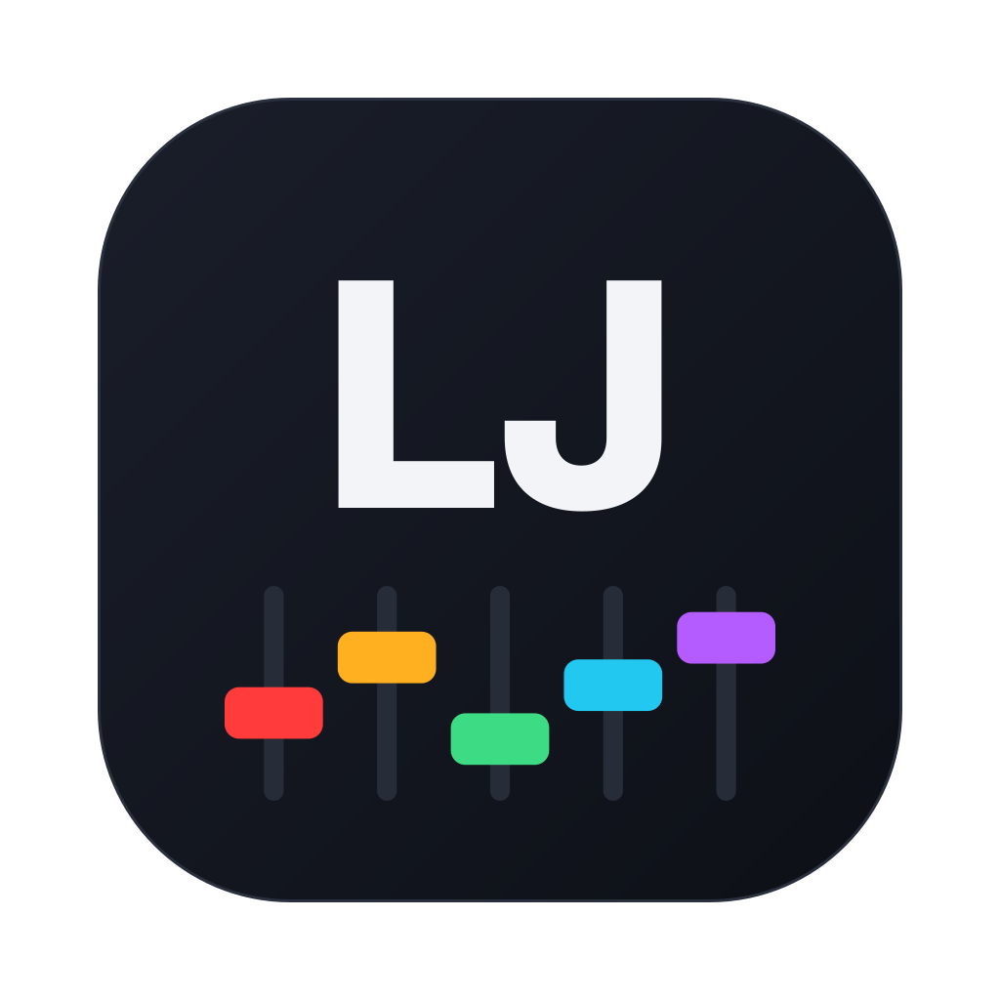
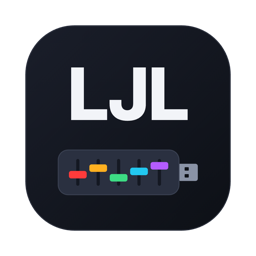

Design 0.1 · 15.11.2026 · Version 0.1 „Starten“ zuerst (App oder Entwicklerprojekt), Installieren/Aktualisieren ab 0.2 · Tokens und Klassen wie VJ-Link / VD-Link, Akzent Pink nur zum Bedienen, auf Pink dunkle Schrift #141821, Pink als Schrift im Tag #CC0045 · Rechner, Namen, Adressen, PIDs und Log-Zeilen erfunden · Beschreibung: die Design-Unterlagen (außerhalb des Repos) · Schalter oben rechts: Tag / Nacht
0 Tokens – Nacht (Standard) und Tag (data-theme="light")
Nacht
--bg#0C0E13
--panel#151821
--raise#1E222E
--line#2A2F3D
--text#DCE1EA
--dim#7E879A
Starten--accent · Fläche#FF5C93 · darauf #141821
--accent-text · Schrift, Linie#FF5C93
--on-accent#141821 · 6,09:1
--emergency#FFD60A
--green · aktuell, läuft#3DDC84
--amber · Update#FFB020
--red · Fehler#FF3B3B
--cyan · Hinweis, Entwickler#22C8F0
--violet · in Entwicklung#B45CFF
--grey · neutral#8A93A6
--log-bg#08090C
--sA … --sE · Suite5 Farben
Tag
--bg#EEF0F4
--panel#FFFFFF
--raise#F3F4F7
--line#D9DDE5
--text#141821
--dim#5E677A
Starten--accent · Fläche#FF5C93 · darauf #141821
--accent-text · Schrift, Linie#CC0045 · 5,75:1
--on-accent#141821
--emergency#FFD60A
--green-ink#14804A
--amber-ink#A15C00
--red-ink#C62828
--cyan-ink#0A7491
--violet-ink#7A35C2
--grey-ink#5E677A
--log-bg#FAFBFC
--sA … --sE · Suiteunverändert
0b Pillen, Knöpfe, Zustände – Pink nur zum Bedienen; Zustand in Grün / Gelb / Grau / Violett / Cyan; Rot nur für Fehler
Keine Internetverbindung. Im Show-Netz ist das normal. Starten geht trotzdem.
Prüfsumme falsch. Die Datei wurde gelöscht. Nichts wurde ersetzt.
Nicht signiert. macOS prüft das Programm nicht. Der Launcher prüft Herkunft und Prüfsumme.
1 PROGRAMME – der Start. Darüber liegt beim Öffnen die Startanimation (?app=suite). Detail rechts, Log-Leiste unten (VJ-Link läuft als Entwicklerprojekt)
Link-Suite
2 laufen
Auf diesem Rechner
gesucht 21:14

LJ Link
1.7.10
Alle Decks, Wellenformen und Cues für die Booth.
/Applications/LJ-Link-PRO.app
VJ-Link
ENTWICKLERLÄUFTPID 48211 · 12:04
Visuals, gesteuert vom Lichtpult.
/Users/dj/VJ-Link · npm start
VD-Link
0.2.0LÄUFT
3D-Lichtvisualisierer für Art-Net und sACN.
/Applications/VD-Link.app

LJL Link
NUR VOM STICKALPHA 0.3.1
Serato-Decks vom Stick des Clubs in LJ Link.
läuft vom Club-Stick auf dem Mac des DJs
Kommt bald – in dieser Reihenfolge
NET Link
Wer ist im Show-Netz?
IN ENTWICKLUNGNOCH NICHT STARTBAR– fehlt: package.json
21:14:02 · Start in /Users/dj/VJ-Link: npm start> vj-link@0.1.8 start
> npm run build && node scripts/dev-app.mjs --run> vj-link@0.1.8 build
> node scripts/build.mjsbuild: renderer 412 ms · main 96 ms · fertigdev-app: Electron 45.3.1 startet …(node:48233) ExperimentalWarning: VM Modules is an experimental featureArt-Net: hört auf 0.0.0.0:6454 · sACN: Universe 1Suite-Chat: 239.255.76.76:47676 auf en8 (192.168.1.10)[ljlink] Bonjour: kein _ljlink._tcp gefunden, versuche erneut in 5 s[ljlink] verbunden mit LJ Link auf 192.168.1.10:8080
2 Programmkarte – alle Zustände – Startweg App oder Entwickler; „noch nicht startbar“ zeigt, was fehlt; 0.2-Zustände (Update, Installieren, Signatur) markiert
Exit-Code 1 nach 3 s.Die letzte Zeile im Log: „Cannot find module 'electron'“.
/Users/dj/VJ-Link · npm start
Noch nicht startbar · kein package.json
NET Link
IN ENTWICKLUNGNOCH NICHT STARTBAR
Wer ist im Show-Netz?
Ordner /Users/dj/NET-Link
package.json fehlt – es gibt nur design/ und docs/
Skript dev oder start
node_modules
Startbar, sobald das Projekt angelegt ist. „Neu suchen“ prüft erneut.
Noch nicht startbar · Skript fehlt
dB Link
KONZEPTNOCH NICHT STARTBAR
Lautstärke nach DIN 15905-5.
Ordner /Users/dj/dB-Link
package.json
Skript dev oder start fehlt in package.json
Der Launcher startet nur diese beiden Skripte.
Noch nicht startbar · node_modules fehlen → npm install mit Rückfrage
PL Link
IN ENTWICKLUNGNOCH NICHT STARTBAR
Patch und Stromlast.
Ordner, package.json, Skript dev
node_modules fehlt
Einmal npm install nötig. Lädt Pakete aus dem Internet.
Update da ab 0.2
LJ Link
UPDATE 1.7.111.7.10
Alle Decks, Wellenformen und Cues für die Booth.
/Applications/LJ-Link-PRO.app
Nicht installiert, nicht signiert → „Seite öffnen“ ab 0.2
VJ-Link
NICHT INSTALLIERTBETA 0.1.8NICHT SIGNIERT
Visuals, gesteuert vom Lichtpult.
Keine Prüfung möglich · nur macOS (auf Windows)
LJL Link
NUR MACOSNUR VOM STICKPRÜFUNG FEHLT
Serato-Decks vom Stick des Clubs in LJ Link.
⋯-Menü der Karte
Startweg
Tag · Entwickler läuft
VJ-Link
ENTWICKLERLÄUFT PID 48211 · 12:04
Visuals, gesteuert vom Lichtpult.
/Users/dj/VJ-Link · npm start
Tag · App bereit · Update da ab 0.2
LJ Link
UPDATE 1.7.111.7.10
Alle Decks, Wellenformen und Cues für die Booth.
/Applications/LJ-Link-PRO.app
Tag · Kommt bald · Leiste ab 0.2
Installiert und verfügbar
geprüft 17:32
Crew Link
Timetable der Nacht.
KONZEPTNOCH NICHT STARTBAR– fehlt: package.json
3 Log-Leiste – unten im Tab PROGRAMME, ein Reiter je gestartetem Entwicklerprojekt. stdout grau, stderr rot-orange, Zeilen des Launchers hell
Läuft · Auto-Scroll aus (hochgescrollt) → „Nach unten“
VD-Link/Users/dj/VD-Link $ npm run devLÄUFT PID 50310 · 0:41
22:03:11 · Start in /Users/dj/VD-Link: npm run dev> vd-link@0.2.0 dev
> node scripts/dev.mjsvite v8.3.8 dev server running at http://localhost:5173/build-main: electron/main.ts → dist-electron/main.js (88 ms)[vite] warning: chunk three.module.js is larger than 500 kBArt-Net: hört auf 0.0.0.0:6454
21:26:40 · Start in /Users/dj/VJ-Link: npm start> vj-link@0.1.8 startError: Cannot find module 'electron'
Require stack:
- /Users/dj/VJ-Link/scripts/dev-app.mjsnpm ERR! code 121:26:43 · Beendet mit Exit-Code 1 nach 3 s
Tag · gestoppt vom Nutzer
VD-Link/Users/dj/VD-Link $ npm run devGESTOPPT · 22:41
Art-Net: hört auf 0.0.0.0:6454[sacn] Universe 3: keine Daten seit 30 s22:41:07 · Stoppen: SIGTERM an Prozessgruppe 5031022:41:08 · Gestoppt nach 38 min
Tag · beendet ohne Fehler
VD-Link/Users/dj/VD-Link $ npm run devEXIT 0 · 20:12
vite v8.3.8 dev server running at http://localhost:5173/Fenster geschlossen, beende …20:12:55 · Beendet mit Exit-Code 0 nach 1 h 04 min
Nicht installiert. Ohne gültige Signatur installiert der Launcher nichts. Die Datei ist gelöscht.
5 IM NETZ – here mit ver und Bonjour, gruppiert nach Rechner, „Dieser Rechner“ oben; fremde Rechner nur anzeigen
Link-Suite
Hört zu · 239.255.76.76:47676 · en8 Kabel 192.168.1.10
Programm
Platz · Name
Adresse
Version
Stand
Weboberfläche
Gesehen
Dieser Rechner · Booth-Mac192.168.1.10
Link-Suite
Booth · Max
192.168.1.10
0.1.0
AKTUELL
–
jetzt
LJ Link
Booth · Max
192.168.1.10:8080
1.7.10
UPDATE 1.7.11
jetzt
VJ-Link
Booth · Max
192.168.1.10
0.1.8
ENTWICKLER
–
jetzt
VJ-Platz192.168.1.12
VJ-Link
VJ-Platz · Lena
192.168.1.12
0.1.7
UPDATE 0.1.8auf jenem Rechner
–
vor 3 s
FOH192.168.1.14
VD-Link
FOH · Tom
192.168.1.14
unbekannt
OHNE VER
–
vor 1 s
NET Link
FOH · Tom
192.168.1.14:8060
0.1.0-dev
IN ENTWICKLUNG
vor 2 s
DJ-Pult192.168.1.21
LJL Link
DJ-Pult · DJ Sora
192.168.1.21
0.3.1
WEG
–
weg seit 22:41
VD-Link meldet keine Version. Ältere Programme senden ver noch nicht. Aktualisieren geht nur an jenem Rechner – der Launcher fasst fremde Rechner nie an.
6 CLUB-STICK – Assistent, Schritte links. Links Schritt 1 „Ziel“ im Tag-Modus, rechts Schritt 4 „Schreiben“ in der Nacht
Link-Suite
Wohin soll LJL Link?
LJL Link läuft vom Club-Stick auf dem Mac des DJs. Neben die App kommen club.json und LIESMICH.txt.
Eingesteckte Sticks
Die Systemplatte wird nie angeboten. Formatiert wird nicht. LJL Link braucht etwa 5 MB.
Link-Suite
Auf den Stick schreiben
LJL Link 0.3.1 von GitHub laden4,8 MB
Prüfsumme und Suite-Signaturok
Entpacken: genau eine LJL Link.appok
Auf CLUB-USB kopieren
2 / 3 Dateien
Auf den Stick kommt
/Volumes/CLUB-USB/LJL Link.app · 0.3.1 · geprüft
/Volumes/CLUB-USB/club.json
/Volumes/CLUB-USB/LIESMICH.txt
Vorhandene Dateien bleiben. Eine alte club.json heißt danach club.json.alt.
7 EINSTELLUNGEN – als Tab, nicht als Dialog. SUITE = gilt für alle Suite-Programme (suite.json)
Link-Suite
Oberfläche
SpracheSUITEFür alle Suite-Programme. Eigene Wahl im Programm geht vor.
AnzeigeSUITETag für helle Räume, Nacht für die Booth.
Startanimation zeigenSUITEHöchstens 2,5 s, mit Taste oder Klick überspringen. Bei „Bewegung reduzieren“ nur eine ruhige Blende.
Suite-Chat
Mit allen Suite-Programmen in diesem Netzwerk chattenSUITEUnverschlüsselt, ohne Server. Nachrichten nur im Speicher.
Name und PlatzSUITESehen alle im Netzwerk. Je höchstens 24 Zeichen.
Im Hintergrund weiterlaufenSymbol in der Menüleiste (Windows: Infobereich). Der Launcher bleibt im Chat und zeigt EMERGENCY auch bei geschlossenem Fenster. Ab Werk aus.
Programme
Entwicklerprojekte suchen inOrdner mit package.json und Skript dev oder start. Leer = kein Entwicklerstart.
/Users/dj
Vor Build und npm install fragenImmer an. Der Launcher ändert nichts im Projektordner ohne Rückfrage.
Beim Start nach Updates fragenab 0.2Fragt GitHub höchstens einmal pro Stunde nach Versionsnummern. Lädt nichts.
Beta-Versionen zeigenab 0.2Vorabversionen bei Update und Installieren anbieten.
Installationsordnerab 0.2Wo die alte App liegt, sonst hier. Ohne Admin-Rechte: ~/Applications.
/Applications
Über
Link-Suite 0.1.0Freie Software unter der Eclipse Public License 2.0. Kostenlos und ohne Gewähr. Keine Telemetrie, kein Konto.
8 Suite-Chat und EMERGENCY – Markup und Verhalten aus VJ-Link (index.html:337–363, chat.ts), app:"Link-Suite"
Suite-Chat – Alpha
Im Raum: du, Lena · VJ-Platz (VJ-Link), Tom · FOH (VD-Link), DJ Sora · DJ-Pult (LJL Link)
Lena · VJ-Platz · 21:58
Bin startklar, LJ Link ist da.
Du · 21:59
Danke! Einlass 22 Uhr.
EMERGENCY · Tom · FOH · 22:40
Nebelmaschine aus – Brandmelder!
Suite-Chat – Alpha
Noch niemand sonst im Raum. Suite-Programme in diesem Netzwerk kommen von selbst dazu.
EMERGENCY
Tom · FOH (VD-Link) · 22:40
Nebelmaschine aus – Brandmelder!
1 weitere
EMERGENCY
Tom · FOH (VD-Link) · 22:40
Nebelmaschine aus – Brandmelder!
Hinweis-Meldung fürs Team, kein Sicherheitssystem. Rand blinkt 1 Hz (bei „Bewegung reduzieren“ fest). Nimmt nie den Tastaturfokus.
9 Startanimation – eingebunden, nicht nachgebaut: Link-Suite/Konzepte/_Startanimation/startanimation.html?app=suite (hier bei 2,0 s angehalten)
Übergabe an den Kopf
0 msFenster öffnet. #intro liegt über allem, PROGRAMME baut sich darunter auf. #top-logo hat .intro-wait.
~2,2 sDas Logo der Animation blendet aus, die Fläche darunter blendet ein.
Ereignislinksuite-intro-done → #intro entfernen, .intro-wait → .intro-in (200 ms), Fokus auf den Tab PROGRAMME.
aussuite.json"intro":false: keine Schicht, Logo sofort sichtbar.